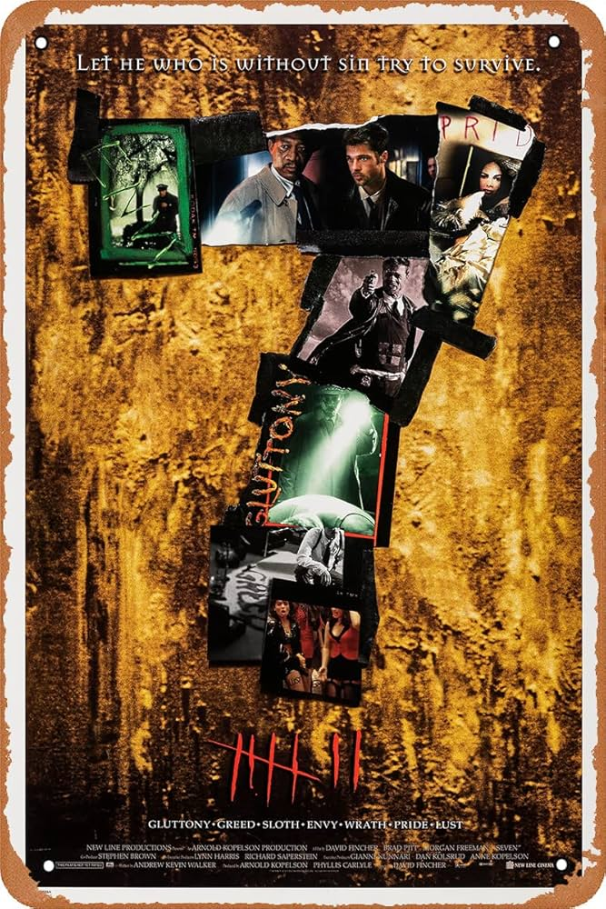

Seven

Detectives Somerset and Mills, one a seasoned cop, the other a relatively new one, are paired up to solve murders. Together they attempt to find a killer who is inspired by the seven deadly sins.

Detectives Somerset and Mills, one a seasoned cop, the other a relatively new one, are paired up to solve murders. Together they attempt to find a killer who is inspired by the seven deadly sins.